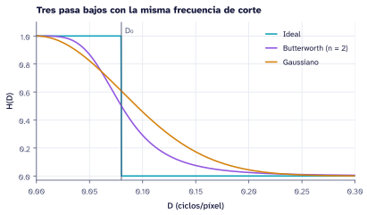
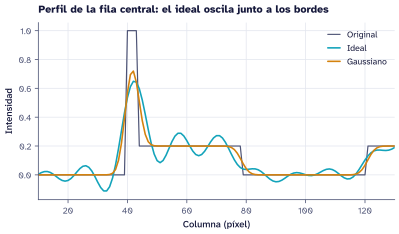

Laboratorio 2: filtrado en frecuencia
Implementar filtros Ideal, Butterworth y Gaussiano y medir los anillos del filtro ideal.
1 Objetivos
- Calcular el espectro centrado de una imagen y la distancia \(D(u, v)\) en ciclos/píxel.
- Implementar pasa bajos y pasa altos Ideal, Butterworth y Gaussiano con el mismo \(D_0\).
- Medir el efecto Gibbs del filtro ideal en un perfil de intensidad.
2 Procedimiento
2.1 Espectro y máscaras
Sigue el tutorial Filtros en frecuencia para construir las tres máscaras con \(D_0 = 0{,}08\) ciclos/píxel.

2.2 Perfil de intensidad
Toma la fila central de la imagen original y de las filtradas y grafícalas juntas.

2.3 Pasa altos y notch
Construye los pasa altos como \(1 - H\) y aplica un notch sobre una imagen a la que le sumaste un patrón \(0{,}1 \sin(2\pi \cdot 0{,}2\, x)\).
3 Preguntas orientadoras
- ¿Por qué el filtro ideal oscila cerca de los bordes y el gaussiano no?
- ¿Cómo cambia el resultado si \(D_0\) se expresa en ciclos/mm con un
PixelSpacingde 0,5 mm? - ¿Dónde aparece en el espectro el patrón periódico que añadiste?
4 Entregables
- Script con las máscaras, las imágenes filtradas y los perfiles.
- Una figura comparativa por tipo de filtro, con ejes y unidades.
- Respuestas a las preguntas orientadoras.
5 Rúbrica
| Criterio | Peso | Logrado |
|---|---|---|
| Máscaras correctas y centradas | 30 % | Las tres comparten \(D_0\) y unidades |
| Comparación visual y por perfil | 30 % | Se mide la amplitud de los anillos |
| Notch | 20 % | El pico del patrón desaparece del espectro |
| Reproducibilidad | 20 % | El código corre de principio a fin |